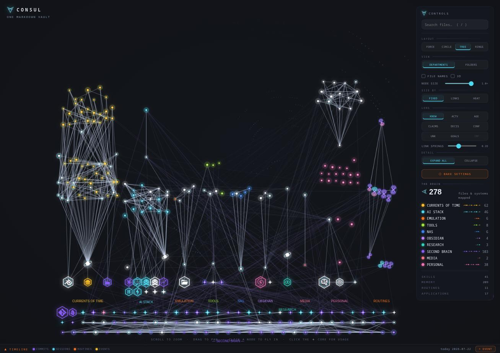
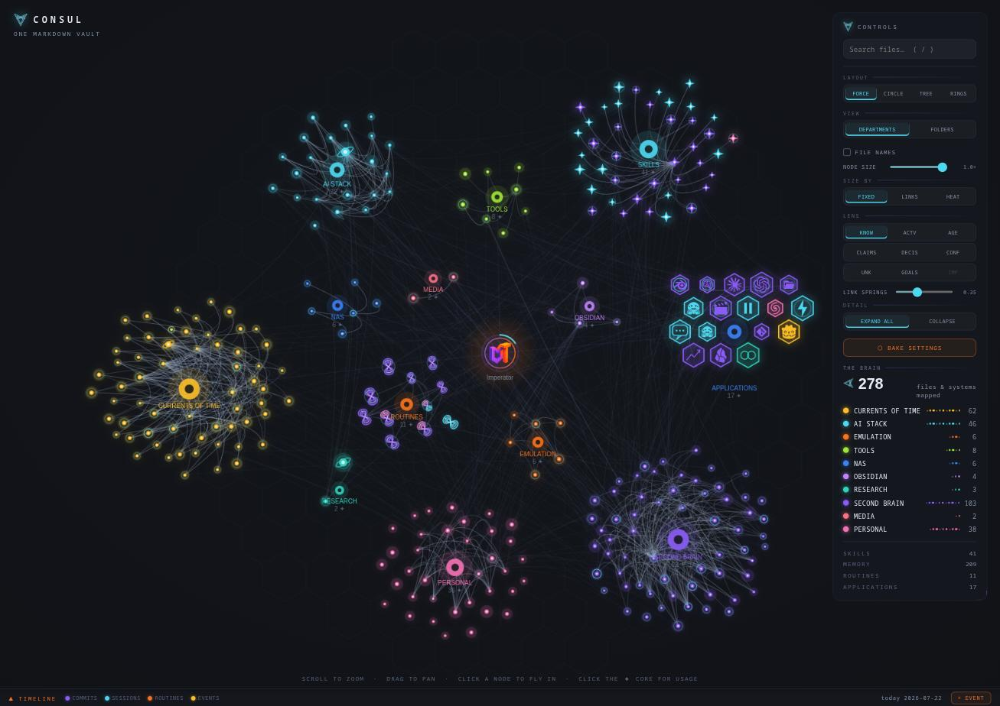
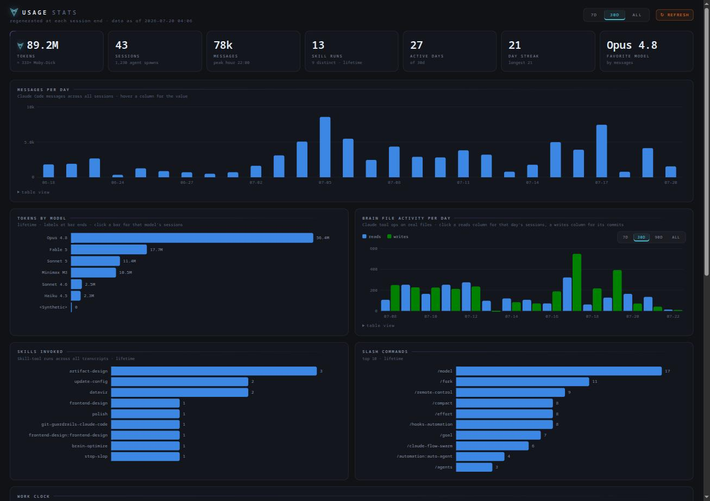
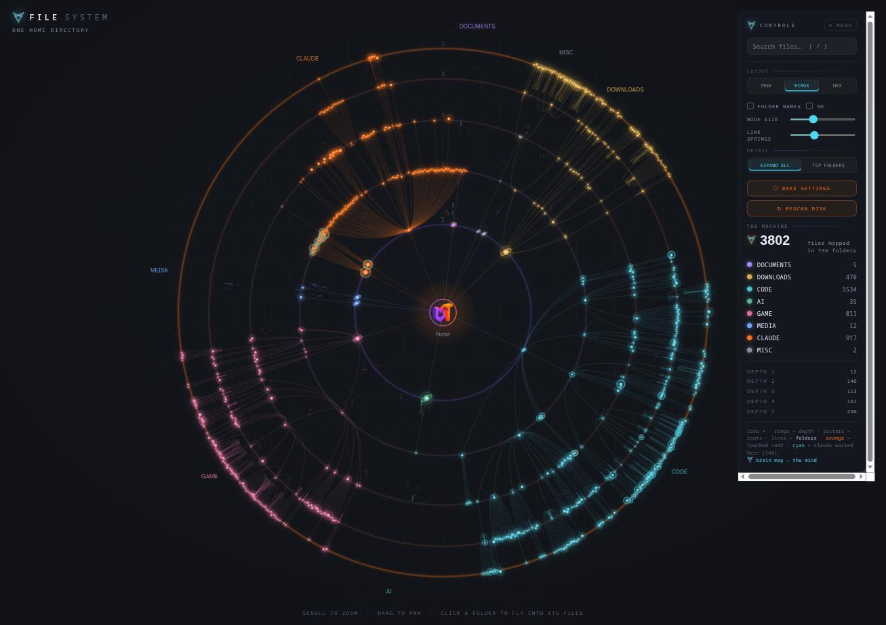
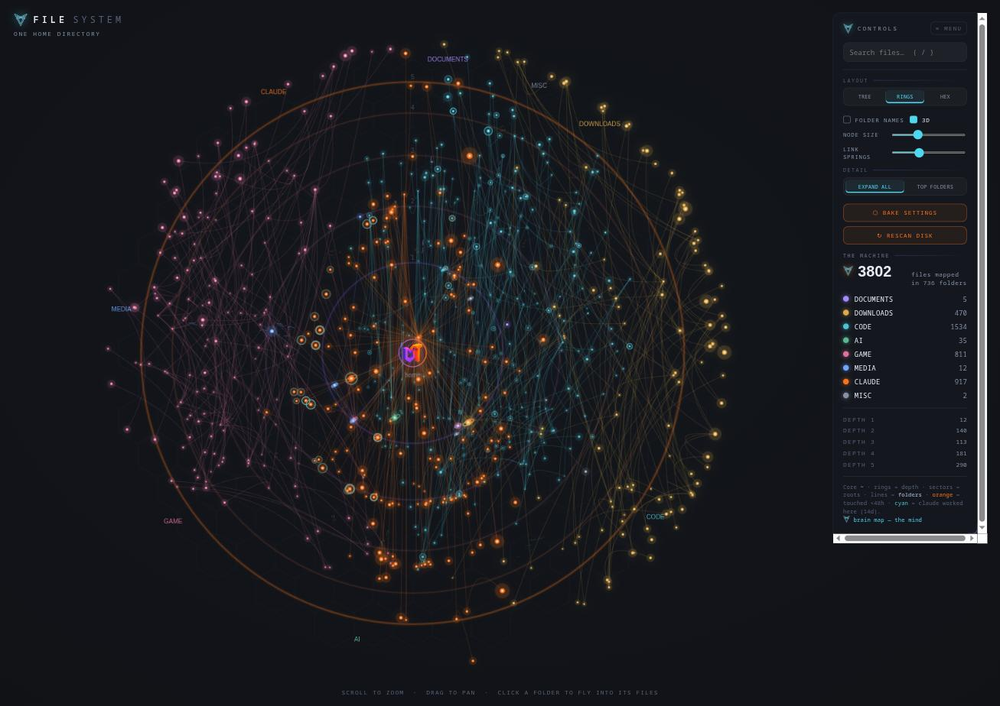
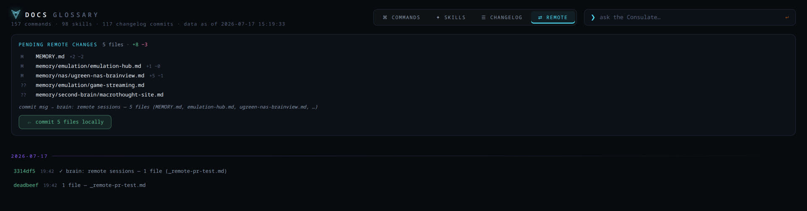
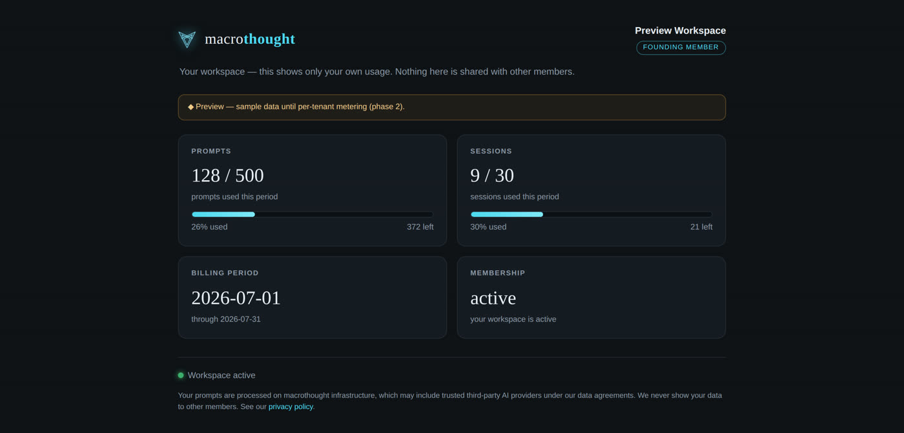

This is a real screenshot of Macrothought running. Every note, project and tool one person owns, mapped as a living constellation and governed by a pipeline that verifies work before it ships.
Nothing on this page is a mockup. Every image is captured from the running system; every number is read from it.
Everything you know and work on, from notes and projects to plans and to-dos, in one organized place you can see instead of scattered across a dozen apps. Think of it as a second brain with a built-in fact-checker. No jargon required.
Your notes, projects and plans become a visual map, where each part of your life or work is its own cluster you can explore. Nothing scattered, nothing lost.
When AI does a task, a second AI tries to prove it's wrong and fixes what's broken before the work counts as finished. The bar is verified, not "the AI stopped typing."
Every fact is marked confirmed, guessed, or unsure, dated and re-checked over time. It tells you what's stale or missing instead of making things up.
Sign in with a link, no passwords. Prompts run on private infrastructure, not handed to big tech. Your knowledge stays plain text you can read, search and take with you.
That's the whole idea. The technical detail is below, if you want it.
Switch the map to TREE and each department grows upward from a shared root. A game project, an AI stack, a teaching archive: each one changes week to week, and you can watch it happen.

TREE layout, live capture. Left to right: a game in development · the AI stack · emulation · tools · NAS · editor · personal, all rooted in one markdown vault.

FORCE layout. The same vault as living galaxies. Every department is a cluster orbiting the core, and you can drag them and watch them re-settle in real time.
The whole vault as a 3D sphere — live, rotating. Flip on 3D and the entire map wraps around a ball you can orbit, spin and read at depth. Departments can also grow into their own 3D cylinders.
A real screen recording, no edits. Layouts glide from one into the next, the vault wraps into 3D, and focusing one corner pushes the rest into place.
Live capture. Force galaxy, circle, rings, tree, the 3D cylinder and focus, all from one markdown vault.
Most AI tools end when the model stops talking. Macrothought keeps going. Its orchestration layer turns your intent into verified, gated releases. An agent finishing its turn is only the first step; the work still has to pass its checks before it counts.
No model in the loop. The requirement ledger, verification harness and release gates are plain state and plain code. Completion is provable, not asserted.
Cheap and idempotent. Local models classify, compile context and propose simple fixes. They propose, they don't decide. It all runs on the desk.
Where judgment matters. Frontier agents take design, hard repair and adversarial audit. Everything they claim is re-verified by the spine.

Everything gets measured. Tokens, sessions, activity and which models did the work, tracked over time. If you can't see it, you can't govern it.
The maps above are real captures. These four are the honest opposite: line-art schematics of what the governing body does under the hood, where there is no single screen to film. Diagrams, drawn plainly as diagrams.
Schematics, not screenshots. The live pipeline, ledger and gate run in the Consulate; these draw the shape of what they do.
A real test on this vault: 249 notes, about 180,000 tokens of knowledge. Eight real questions, measured with the recall tool that ships with the system.
Measured across 27 real questions on the live 249-note vault. Accuracy is whether recall opened a note that answers the question (one miss, one question excluded because only the gate's code holds that answer, not a note). Finding the answer is deterministic, so it costs zero model tokens. Dollar figures assume $3 per million input tokens, a mid-tier model rate. The 180k bar is the honest worst case, when you paste everything because you don't remember which note holds the answer. Hand a chat the single right file instead and a prior head-to-head still measured about 10x fewer tokens, because recall returns the section, not the whole file. And a chat re-sends its full history on every turn, so the longer you work, the wider the gap grows.
A standard chat is a fine place to talk to a model. Macrothought is where your knowledge lives, gets verified and stays yours. Here is the honest breakdown, including the rows where a plain chat still wins.
◐ partial or limited. A standard chat wins on instant setup and always running the newest model. Macrothought routes to those models when a task needs them, and adds the memory, verification and privacy a chat window has no way to give you.
The same pattern fits anywhere knowledge decays faster than people can keep up: one readable vault, confidence you can see, and releases that are verified before they ship.

The machine view: the whole working environment as a constellation, with amber marking what changed in the last 48 hours.

The machine in 3D. Flip the same file constellation into a sphere and orbit the whole home directory, thousands of files read at depth.
The brain travels; the hands stay home. The whole system mirrors to a small always-on server and is reachable from a phone over a private network: maps, stats, history and consoles.
Remote work is reviewed like a pull request. Changes made away from the desk aren't auto-committed. They queue with a summary and file list, and land only on a one-click local review.

⇄ remote tab, live capture. A pending remote changeset and its commit history.
Markdown first. Databases, graph stores and vector memories were tried, then parked. The institutional memory is text a human can read, diff and version.
Confidence is explicit. Every claim is tagged [verified] [inferred] or [uncertain], dated and re-checked weekly.
Gap-aware recall. Answers say what's stale and what's missing. A system that hides its gaps can't be trusted.
No queue without a drain. Every automation that accumulates work has a routine that consumes it. Machinery that only grows is machinery that rots.
Macrothought is a working brain today, not a promise. Here is the honest path from hands-on setup to a hosted product. Nothing here is dressed up as live before it is.
A live walkthrough, a working session, or a full build on your own machine: the vault, maps, routines and governed pipeline, designed around your work. Purchasable below today.
A managed, governed vault we host and maintain, with prompts run through private infrastructure. Your own workspace, your own usage, isolated from everyone else's. The payment gate, per-tenant isolation and metering are built and independently audited. The public service goes live once storage, disclosure and the secure edge are in place.

Your workspace, preview. Your own plan, usage and billing, private to you. Nothing shared with other members.
Bring your existing AI conversations, web sources and footage in. They get distilled into your departments with their provenance kept, and you can turn research or renders into verified releases, priced by what you use.
Building in the open. Want the current state or to shape what ships next? Get in touch.
This is the same system you've been scrolling through, designed around your life and work. No course, no template drop.
A real-time tour of the running system and an honest read on what it could look like for you.
BOOK A WALKTHROUGHWe design your vault structure, rings, departments and routines together. You leave with a map of your system and the exact next steps to build it.
BOOK A SESSION · $120Built on your machine, end to end: vault, maps, routines and agent wiring, plus 30 days of Q&A while it becomes habit.
START A SETUP · $750Secure checkout by Stripe · card, Apple Pay, Google Pay · prefer an invoice for your company? Email for invoicing.
Macrothought isn't a pitch deck or a wrapper around someone else's model. It's a system built and used every day to run real work, from game development to an AI stack to a business, all from one markdown vault with a governing body that verifies work before it ships.
Every screenshot on this page is the live system. The pipeline that gates a release here is the same one you'd get. Nothing is a mockup.
No VC roadmap, no growth theatre. Features ship when they're correct and get cut when they aren't, the same discipline the product enforces.
Your knowledge stays plain text you can read, diff and export. The system tells you what's stale or uncertain instead of pretending to be complete.
Questions, a walkthrough, an invoice for your company, or just to see it running. Email reaches a real person, usually within a day.
macrothought.org · a governed second brain, built in the open.
A walkthrough is the live system on a real screen, not a deck.
REQUEST A WALKTHROUGH